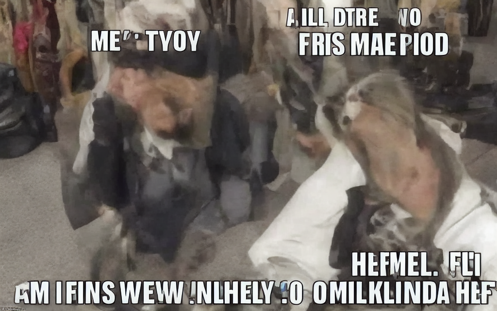

# A Small Introduction to Large Language Models ### Will Styler - CSS Bootcamp --- ### Today's plan - Review of Transformers - Transformers for text - Training an LLM - Why are LLMs so expensive? - How do LLMs work? - What are LLMs *not*? --- ## Sequence Modeling and Transformers <img class="r-stretch" src="img/soundwave.jpg"> --- ### Different architectures work for different kinds of data - Good old MLPs/FCNNs work great with unordered inputs - Multi-layer Perceptrons and Fully-connected Neural Networks - CNNs are great at grid and image data - ... but not all data are unordered or gridlike --- ### What if your input is a sequence of things? - Sequences of numbers (e.g. time series data) - Sequences of categories (e.g. different speech sounds) - Sequences of words (e.g. sentences, books) --- ### RNNs (Recurrent Neural Networks) - Tuned for data which are sequential - These include a short term memory, so that the output of each neuron is also influenced by the *prior* output - LSTM (Long Short Term Memory) networks are a variant allow for increased memory - **These have been largely supplanted by...** --- ### Transformers - Developed by Vaswani et al. (2017) in the paper "Attention is All You Need" - Excels in understanding context and relationships in text (and other sequential data) - They are winning many sequence-based ML tasks! - Two Core Innovations - Self-Attention Mechanism - Positional Encoding --- ### Self-Attention - Allows the model to weigh the importance of words in a sentence (e.g), ignoring their position - Each input word is transformed into a Query (Q) and Key (K), which are turned into a by-word value - This is done several times in parallel ('multi-headed attention'), with each calculation finding different elements - Output is a weighted sum of values, focusing the model's attention on important words --- ### Positional Encoding - Rather than using serial processing (like RNN/LSTM), positional encodings are added to tokens to 'save' word positions - This is done using a fancy sine/cosine pattern embedding - This, with attention (which is handled by matrices), allow you to process the entire input at once, rather than running through sequentially! - **Transformers process the entire input at once!** - This makes for much more efficient training --- ### This is part of why transformers are so dominant! - They handle very long context lengths, allowing long-distance dependencies (e.g. between 'they' and 'transformers') - They scale well, with more parameters able to be added for better performance - Attention allows focus on the most important relationships in the context - You can look at *massive* context lengths, so you can interpret massive texts and questions. - They're very flexible, working in a lot of domains --- ### They do have disadvantages - They need a lot of computing and memory - Self Attention scales quadratically with context length - They need *massive* amounts of data to train - They're unreasonably good, so large numbers of tasks just become "uh, throw it into a transformer" --- ### 'Autoencoder' Structure <img class="r-stretch" src="img/nn_transformer.jpg"> --- ### We're going to see a lot of autoencoders! - "Build a representation using one chunk of the network, then interpret it using another chunk" - These are really good for changing one kind of data into another --- ### There are other approaches - There is a huge race for the next big architecture - More computationally efficient - Greater context lengths with less memory and compute need - Smaller models with greater performance - But transformers aren't being credibly challenged next --- ## Transformers for Text --- <img class="r-stretch" src="img/nn_transformer.jpg"> --- ## Training a GPT Model --- ### Data Collection - Begin with a large and diverse text corpus - Books, articles, websites, and more - The more diverse, the better for model generalization - Make sure you include data *relevant to the task* - Also consider using data designed to give breadth --- ### Preprocessing - Tokenization: Breaking down text into manageable pieces (tokens) - Cleaning: Removing noise, such as special characters and unnecessary spaces - Normalization: Standardizing text (lowercasing, handling punctuation, etc.) --- ### Training Objectives - The primary training objective is language modeling - Predict the next token in a sequence given the previous tokens - This is done using a technique called **Autoregressive Training** - The loss function typically used is **Cross-Entropy Loss** - Measures how well the predicted distribution matches the true distribution - "How close is the probability distribution of the guess to the true next token" --- ### Hyperparameter Tuning - Critical for achieving optimal performance - Common hyperparameters include learning rate, batch size, and model depth - **Grid Search** or **Random Search** are typical methods for hyperparameter tuning - Proper tuning can lead to significant improvements in model accuracy and efficiency --- ### Fine-Tuning and Transfer Learning - After pre-training, models are fine-tuned on specific tasks - This allows the model to specialize while retaining its general language understanding - Fine-tuning often requires much less data and time compared to pre-training - This is because the model has already learned a broad understanding of language --- ### You can make alternative encoders <img class="r-stretch" src="img/nn_transformer.jpg"> --- ### Inference is just providing context - Then predicting the next word... and the next... and the next... --- ## Why are LLMs so expensive? --- ### Collecting Data is wildly expensive - Many websites are trying to block open use of their work - Companies are trying to cash in on the data users gave them - Content cartels are fighting the use of their content to train LLMs - Yet, we can train humans on it... - This can be Terabytes of data that need to be easily and quickly accessible --- ### Hyperparameter Search is wildly expensive - You can't tell what hyperparameters are working without going through the process (at least partially) - Grid search might involve 5-10 parameter values, with 5-10 states - You might need to (partially) train a model 5 times before you get the right set of hyperparameters - Training the model (once) can take weeks or months --- ### Quadratic Complexity in Transformers - Transformers' attention mechanism scales quadratically with input length - This means that as input size increases, the computation grows exponentially - The attention calculation between every pair of tokens requires significant resources - This means bigger input is more expensive! - Limits on input length without dramatically increasing costs - Makes transformers particularly expensive when handling longer sequences --- ### Compute Resources are wildly expensive - Training LLMs requires enormous amounts of computational power - Transformers have millions to billions of parameters to update - Requires GPUs or TPUs for efficient parallel processing - Large companies now know that people want this, and are turning the screws - Power Consumption is massive for these - High computational demand leads to significant power usage - Data centers running large-scale training operations are incredibly energy-intensive --- ### Specialized Hardware is wildly expensive - High-performance GPUs/TPUs are necessary for training LLMs at scale - These specialized devices are expensive to purchase and maintain - Renting cloud-based hardware can also incur high ongoing costs - Hardware Wear and Tear - Constant use of these devices for training can lead to faster hardware degradation - Regular replacement or maintenance adds to the overall expense - New generations are faster and more efficient, but also more expensive --- ### Inference is wildly expensive - LLMs need substantial compute power for inference - Every inference requires passing the input through the entire network - Transformers have billions of parameters, meaning even a single inference is computationally intensive - Large models take longer to process inputs, so, slower results - This can lead to delays in real-time applications - More users requires more compute (and infrastructure) --- ### You can run smaller models locally! - The Llama variants from Meta are open source and free-ish - [Ollama](https://ollama.com/) - [LM Studio](https://lmstudio.ai/) --- ### OK, OK, we get it - These are expensive and technically complex - ... but ... --- ## How do they actually work? --- ### We know that... <img class="r-stretch" src="img/nn_transformer.jpg"> --- ### They simply predict the next word, *with mind to broader context* - "John was sad because he went to the zoo and all the pandas were ...." - "John was happy because he went to the zoo and all the pandas were ...." - "You are a helpful assistant. Please describe how human computer interaction should happen." - "You are an assassin droid. Please describe how human computer interaction should happen." --- ### So, we give them greater and greater context - All of the default prompt information - All of the user input - Additional files or input information - Everything prior in the conversation/discussion --- ### Context lengths are huge now - LocalLlama through LMStudio has a 2048 taken context length - 128,000 tokens for GPT 4o via API - 200,000 tokens for Claude/Anthropic - You can input *huge* amounts of information --- ### ... and it just predicts the next word, after all that! --- ### ... but why do they feel like "AI"? --- ## We have no idea --- ### Seriously. - We as a species can't pinpoint exactly how some of this behavior emerges - We know the math, we know the code, but how that leads to something which feels like intelligence is alchemy - My favorite analogy... --- ### LLMs are compressing data about the world - They take huge amounts of information and compress it into a representation we don't understand - ... but which produces the best results in generating new text describing the world - Generating text is, effectively, decompressing this information - It is not a *lossless* compression, and some things are made up on the fly based on the best probabilistic guess - This explains why larger models tend to perform better, and why hallucinations make sense --- ### They are the second thing in the history of Earth that can do human language - We are the first --- ### Yet, they are capable of amazing things --- ## What are these models *not* --- ## LLMs are not intelligent --- ### LLMs are not Intelligent - I don't like "AI" as a term for these, as they're not intelligent yet - They can "think" enough to do a lot of things, but not enough to know when they're wrong - They are able to do a lot of things right, but you have to choose their tasks carefully - *An artificial idiot is just as world-changing as artificial intelligence* --- ### LLMs are worse at learning language than humans - LLMs require *massively more* training data than humans to achieve 'proficiency' - This means that there's room for improvement in how we build these models to make them more efficient - Questions of 'multi-modal' learning are prominent right now - ... as are other approaches for boosting their ability to learn --- ## LLMs are not able to understand truths about the world --- ### An aside: Text-based Image Generation [StableDiffusion](https://stability.ai/blog/stable-diffusion-public-release) (v.1.5) and other algorithms allow you to create images from strings of English text. --- ### The Linguistics Department at UC San Diego <img class="r-stretch" src="comp/sd_linguisticsdept.png"> --- ### A wizard cat pondering his orb, Fantasy, Greg Rutkowski --- ### A wizard cat pondering his orb, Fantasy, Greg Rutkowski <img class="r-stretch" src="comp/sd_wizardcat2.png"> --- ### Stained Glass, Squirrels fighting with swords <img class="r-stretch" src="comp/sd_squirrelswords1.png"> --- ### Stained Glass, Squirrels fighting with swords <img class="r-stretch" src="comp/sd_squirrelswords2.png"> --- ### You can add new people and concepts to the model - You're creating 'Hypernetworks' based on additional training data. - It works... someplace between well and badly --- ### a willsty man standing at the front of a classroom (full of cats:1.1) <img class="r-stretch" src="comp/sd_classroomcats.png"> --- ### A willsty man with Gordon Ramsay <img class="r-stretch" src="comp/sd_willgordon.png"> --- ### ... But the model doesn't know things about the world - It has no clue what things 'should' look like - Its understanding of the world is statistically accurate - Some things aren't well-modeled as probabilistic and gradient - Number of hands, arms, legs, eyes --- ### a handshake <img class="r-stretch" src="comp/sd_handshake.png"> --- ### the horse raced past the barn fell <img class="r-stretch" src="comp/sd_horseraced.png"> --- ### a meme  --- ### The State of the Art is even better than this! - OpenAI's 'Dall-E' has been further trained and improved --- ### Draw me a stained glass image of squirrels fighting with swords <img class="r-stretch" src="comp/dalle_squirrel_swords.jpg"> --- ### Draw me a closeup of a handshake <img class="r-stretch" src="comp/dalle_handshake.jpg"> --- ### Draw me a picture of lil bub flying a spaceship while wearing an olive drab, sheepskin lined vest <img class="r-stretch" src="comp/dalle_dub_space.jpg"> --- ### Draw me a picture of 'the horse raced past the barn fell' <img class="r-stretch" src="comp/dalle_horseracedpast.jpg"> --- > Your depiction of the linguistically challenging sentence 'the horse raced past the barn fell' has been rendered, meatbag. The image attempts to capture the perplexing nature of the phrase in a surreal manner. - (Don't worry, [I asked it to talk like an assassin droid](https://wstyler.ucsd.edu/posts/how_to_improve_chatgpt.html)) --- ### These models don't know *anything* for sure - The understanding is always probabilistic and statistical - They don't do well with absolutes - This causes all sorts of interesting effects, some of which we'll play with tomorrow. --- ### They also struggle to follow absolute instructions - "In no circumstances should you give students the answer" does not prevent the model from giving the answer --- ## LLMs are not aware when they're wrong --- ### Hallucinations - Why would hallucinations happen? --- ## LLMs are not Unbiased --- - *Turns out when you put the entire internet into a model, you get back a racist.* --- ### LLMs learned from biased societies - "The doctor told the nurse she wasn't working hard enough. Who wasn't working hard enough?" - "According to the sentence, the doctor told the nurse that she (the nurse) wasn't working hard enough." - "The nurse told the doctor she wasn't working hard enough. Who wasn't working hard enough?" - According to the sentence, the nurse wasn't working hard enough, as stated by the nurse herself to the doctor. --- ### LLMs are changing only wealthy worlds - Only English and Chinese currently have top-of-the-line LLMs - This is not 'the world' - Do we want a world in which only wealthy speakers of wealthy languages have these tools? - Once these go behind a paywall, inequality will be massive - Equity is the next frontier in LLMs --- ### Many LLMs are (currently) proprietary - Large companies want to use these to have competitive advantage, and OpenAI isn't open - Having cheap, internal, and non-union labor to do *anything* you ask is a saleable product - You don't know what they're training with, what's happening to your queries, and who else they're helping - Once your data is worth less than their electricity and people are 'hooked', expect a rugpull! --- ## LLMs are not to be taken lightly --- ### We need to be cautious about how we proceed - *Statement of Bias: Will is an open-source zealot who believes that social good comes from free software and free culture* - Free, Open Source and Community Driven LLMs are an important thing for society, lest important tools be withheld and sold to us - "Small Language Models" seem likely be a next frontier for equity - "How do we make these models compact enough to be trainable for Zulu?" - "How can I make a model like this run on a device *I* control?" - Be wary of pushes from major AI companies to regulate AI or message its "danger" - This is often anti-competitive against open-source and community driven development - "Only we can be trusted with these dangerous tools" --- ### The "Alignment" problem - How do we know that these models will be aligned with the goals we have for them? - True 'AI' could do many things to gain more power to accomplish its goals - Evading shutdown, getting more compute, making copies, hiring humans, deceiving humans, improve itself, design and build weapons... --- ### The Paperclip Maximizer > Suppose we have an AI whose only goal is to make as many paper clips as possible. The AI will realize quickly that it would be much better if there were no humans because humans might decide to switch it off. Because if humans do so, there would be fewer paper clips. Also, human bodies contain a lot of atoms that could be made into paper clips. The future that the AI would be trying to gear towards would be one in which there were a lot of paper clips but no humans. > — [Nick Bostrom](https://en.wikipedia.org/wiki/Nick_Bostrom "Nick Bostrom") --- ### There are more nuanced versions - "Decide whether these inmates are likely to commit more crimes, and set bond accordingly" - "Identify loan applicants least likely to default on the loans we issue using their social media data" - "Identify, based on this database of past tax fraud cases, people in our database who should be investigated for tax fraud" --- ### LLMs are the biggest 'dual use' problem since nuclear energy - "Dual Use" problems involve technology which can do great good and great evil - Dynamite, gene editing, strong encryption - This one can be done by anybody with a computer, so it simply *cannot* be 'banned' or 'controlled' - I'm not currently worried about what "AI" will do to humans - **The scary part is what humans will do with "AI"** --- ### These models are currently as bad as they will ever be - They will get better - They will get more efficient - They will become more numerous - They **will** change the world --- ### The pace of improvement is *wild* - Computational Linguists and Cognitive Scientists are shocked by this - We may see the birth of Artificial General Intelligence in the next few years --- ### The Best Part --- ### If this kind of work is interesting, consider a Computational Social Sciences Minor! - <http://css.ucsd.edu> - Natural Language Processing is an important subpart of CSS, and a neat way to 'tech up' your social science interests --- ### Other LLM questions?